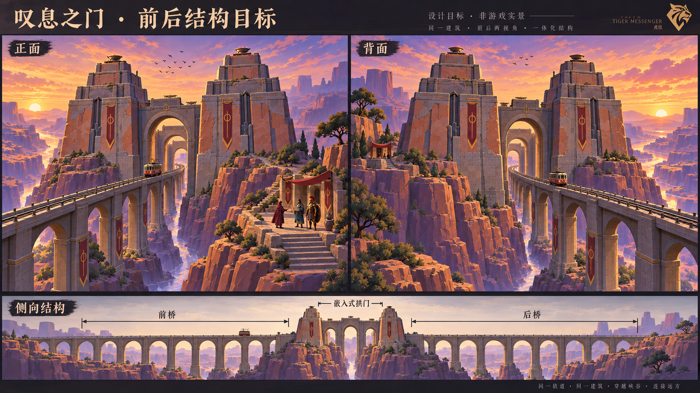

叹息之门 · 双塔收分与前后桥 · 十轮
进入8931原游戏 · 历史版本（不代表当前状态）
以下均为实际游戏截图。双塔保留宽台基，塔面连续向上收分；前后桥沿真实电车线路生成。第1轮失败已保留记录，第2—10轮自动净空和台阶测试通过。尚未完成手动整段乘车验收；天空、岩层与植被仍未达到目标图。
第10轮 · 正面与前桥

第10轮 · 背面与后桥

完整桥段俯视（保留球面曲率）

认可目标（概念图）

逐轮记录
| 轮 | 修改 | 检查 | 实景 |
|---|
| 1 | 双塔斜面收分；发现轨道坡度错误，未通过 | 16 处轨道阻挡；台阶通过 | 正面 / 背面 |
| 2 | 统一桥与轨道高程；修正门区倾斜 | 0 处轨道阻挡；台阶通过 | 正面 / 背面 |
| 3 | 风化断边去除大锯齿 | 0 处轨道阻挡；台阶通过 | 正面 / 背面 |
| 4 | 背面补齐贴墙旧石层 | 0 处轨道阻挡；台阶通过 | 正面 / 背面 |
| 5 | 桥孔砌石分缝；发现重复面警告 | 0 处轨道阻挡；台阶通过 | 正面 / 背面 |
| 6 | 修复重复面；补护栏与立柱 | 0 处轨道阻挡；台阶通过 | 正面 / 背面 |
| 7 | 桥墩下粗上细，增加承台 | 0 处轨道阻挡；台阶通过 | 正面 / 背面 |
| 8 | 背面补拱券石、门框与圆形标识 | 0 处轨道阻挡；台阶通过 | 正面 / 背面 |
| 9 | 上层恢复灰石、下层保留赭色抹灰 | 0 处轨道阻挡；台阶通过 | 正面 / 背面 |
| 10 | 桥身灰石调色；扩大实际桥面落脚查询范围 | 0 处轨道阻挡；台阶通过 | 正面 / 背面 |
JEV与工程同步
JEV每轮读取精简文字证据，负责分流，不具备看图能力；低置信结果交回人工判断，不自动放行。Blender保存建筑、桥址、风化三个源文件；Web和Godot使用同源导出。
工程记录与限制 · 5040条净空检测